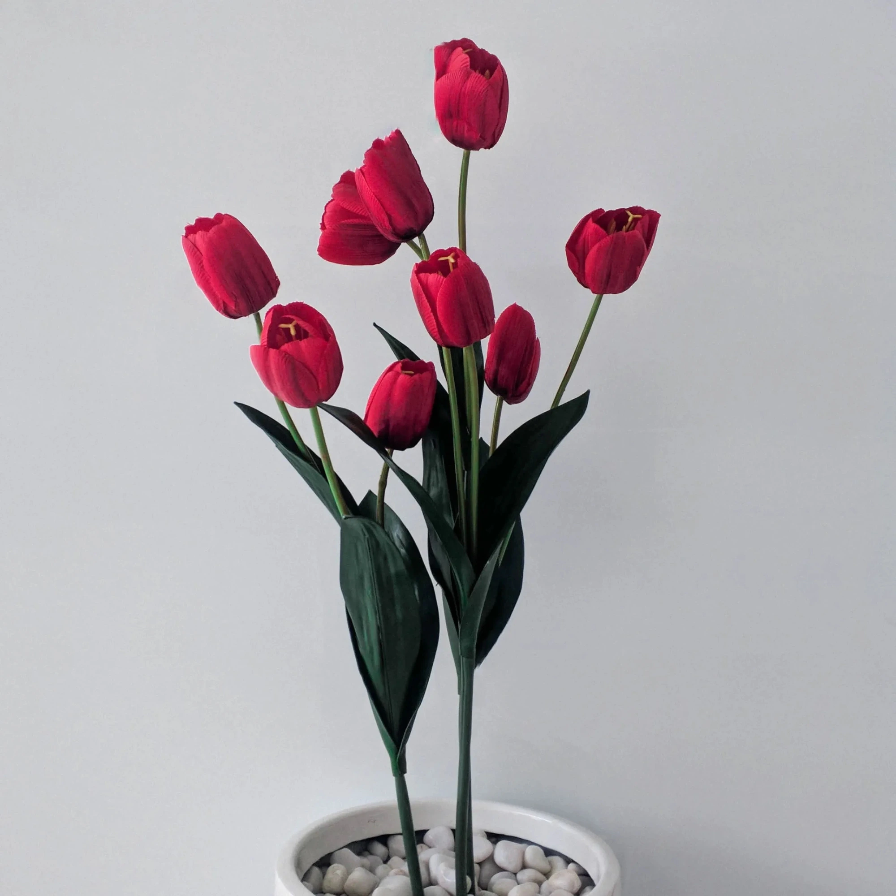
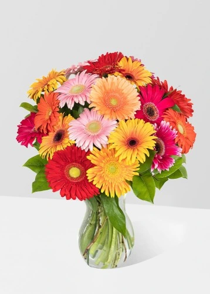
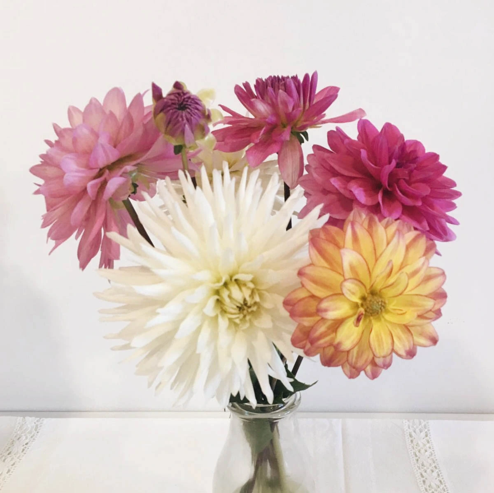
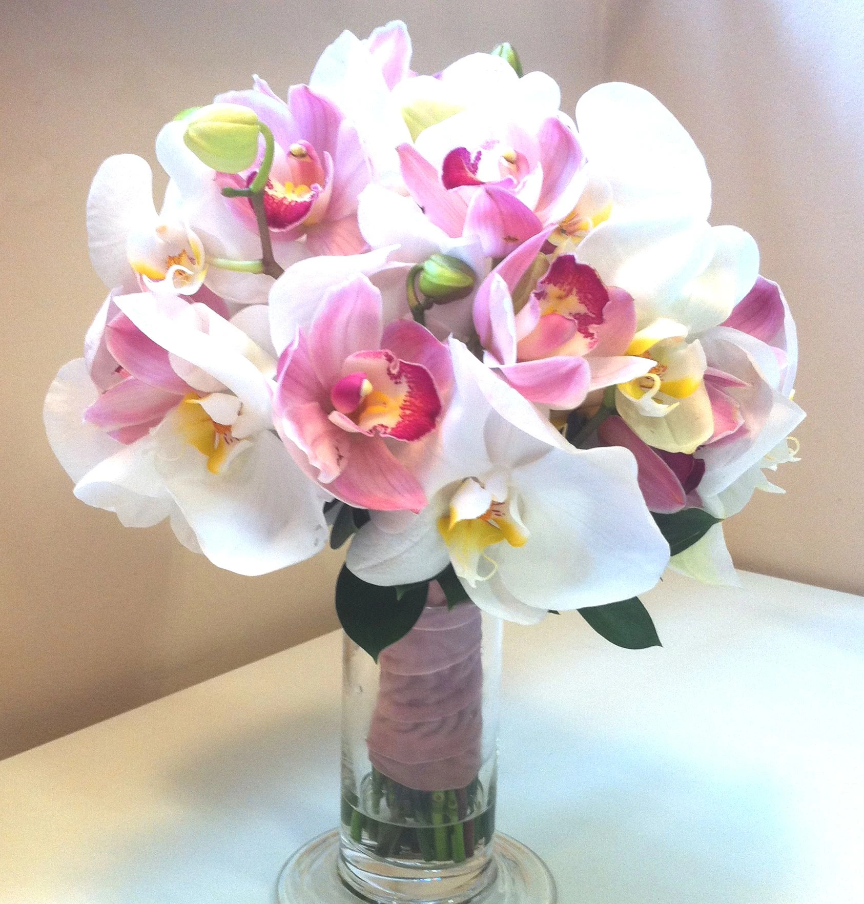
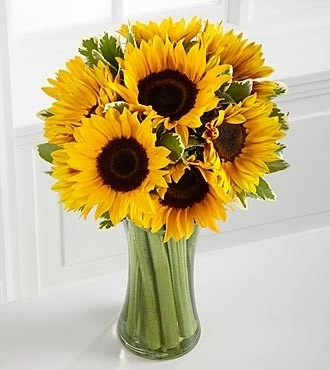
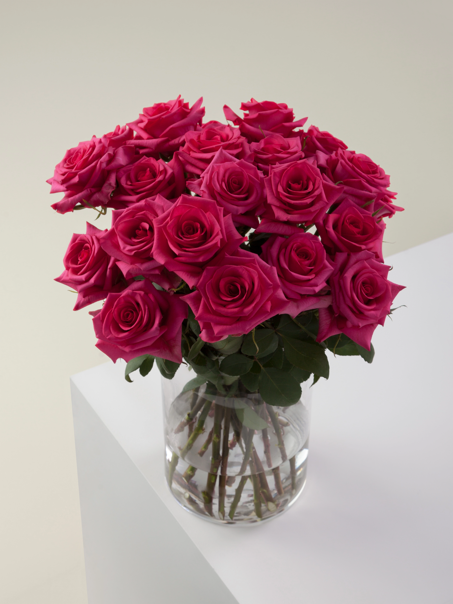

Precio: $890.00 MXN
Descripción: En el lenguaje de las flores, los tulipanes pueden expresar una gran variedad de emociones, como el amor, la amistad, la alegría, la admiración, la pasión, la pureza, la inocencia, el orgullo, la dignidad, el éxito, entre otras.
Agregar al carrito
Precio: $620.00 MXN
Descripción: En el lenguaje de las flores, las gerberas simbolizan alegría, pureza, inocencia, amistad, felicidad y admiración. También pueden expresar la intensidad de los sentimientos..
Agregar al carrito
Precio: $380.00 MXN
Descripción: En el lenguaje de las flores, la dalia simboliza la elegancia, la fuerza, la dignidad, la creatividad, la positividad y el crecimiento. También puede representar el amor eterno, la belleza, la bondad y la fuerza interior.
Agregar al carrito
Precio: $989.00 MXN
Descripción: Las orquídeas suelen considerarse un símbolo de feminidad, ya que su delicadeza y refinada belleza se asocian a la belleza femenina. Además, las orquídeas suelen regalarse a las mujeres en ocasiones especiales, como el Día de la Madre, San Valentín o los cumpleaños, simbolizando amor y afecto..
Agregar al carrito
Precio: $1,030.00 MXN
Descripción: En el lenguaje de las flores, el girasol simboliza la felicidad, la alegría, el positivismo, la vitalidad, la energía, la buena suerte, la salud y la esperanza. También puede representar el amor, la admiración, la honestidad y la transparencia.p> Agregar al carrito

Precio: $780.00 MXN
Descripción: Las rosas rojas simbolizan amor apasionado e intenso, y son un lenguaje universal para expresar sentimientos románticos. También pueden representar respeto y admiración..
Agregar al carrito